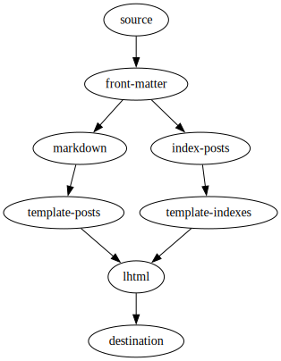
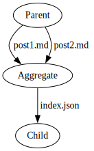
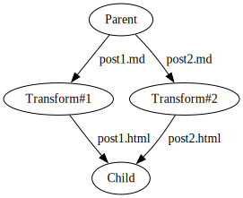

A Common Lisp static site generator, because why not?
In a recent post about speeding up md2blog (the Deno/TypeScript-based static site generator I created for this site), I gloated about suppressing the urge to build yet another static site generator:
I have successfully staved off the urge ... to create yet another static site generator by instead making md2blog ... just fast enough ... that it seems pointless to bother improving upon its performance.
This is the inevitable follow-up post where I describe the new static site generator I ended up building, this time using Common Lisp.
Motivation
I'll discuss differentiators next, but my personal motivation for creating this static site generator is some combination of the following:
- I've been learning Common Lisp (to sample REPL-driven development, macros, etc.) and I wanted to build a small-but-nontrivial project to help me learn (aside: I'm also curious about performance with SBCL)
- I wanted to try building an extensible static site generator (like Metalsmith) that natively supports incremental rebuilds
In other words: for fun.
Differentiators
Fun is fun, but am I just reinventing the wheel? Hopefully not. I fully expect no one else will use this static site generator (assuming I even complete it), but I think it does have a unique combination of features, including:
- Being based around a completely generic and extensible pipeline (sort of a "static site generator toolkit", similar to Metalsmith)--theoretically, it's not even limited to web pages (or even the file system)
- Having fast incremental rebuilds natively supported, without having to prescriptively list the inputs and outputs of each step
- Using a template system that is based entirely on list processing (the "Lisp" part of "Common Lisp")
- Providing a built-in debugger (this one is kind of cheating since it comes for free with Common Lisp)
Architecture
Pipeline
For maximum flexibility, this static site generator is based on a generic processing pipeline, represented as a directed acyclic graph of processing nodes.
Here's a description of a blog pipeline, with one bullet per node:
- Enumerate files from the input directory
- Extract front matter (metadata) from Markdown files
- Convert Markdown into a tree-based document format
- Create an index of all posts
- Create index and archive pages
- Render tree format into HTML
- Write HTML files out to the output directory
In image form (note: the pipeline definition in code is shown later):

Node types
So far, this sounds like Metalsmith's declarative JSON-based "plugin chain". Here's the twist:
There are two main node types:
- Aggregate nodes: Similar to Metalsmith plugins, these nodes operate over the entire set of files/items and produce multiple outputs (and can remove items, too), i.e. they are M:N (M inputs and N outputs)
- Transform nodes: These are 1:N nodes which only consume a single input file/item (but can still produce N outputs)
For example, here are two hypothetical nodes: an aggregate node that combines metadata from two Markdown posts ("post1.md" and "post2.md") into a single index ("index.json"), and a transform node that converts Markdown to HTML -- note that the transform node processes each item in isolation.
 
Explicitly expressing 1:N transform nodes is the primary innovation (although I'm sure--at least I hope--this has been done before, somewhere). Here are the benefits:
- Single-item transformations can be run in parallel
- Only new or modified input items need to be transformed when rebuilding (updating)
I experimented with a similar approach using GNU Make in the past, but besides being slow (because it spun up a new process for processing each input), it was also cumbersome, requiring hand-crafting patterns and adding kludges to detect zombie files that should be deleted.
Under the hood
Internally, the processing pipeline actually operates over "changes". For example, if a file gets added or modified in the source directory, an :update event is propagated down the pipeline; if a file is deleted, a :delete event is sent. There are two additional node types that operate directly upon changes:
- Source nodes: Create changes (e.g. based on seeing if the contents of a directory have changed)
- Sink nodes: Consume changes (e.g. write
:update'd files to disk or remove:delete'd files)
Each node maintains a snapshot of inputs and outputs and they will only run when their input actually changes (item contents and/or metadata). Transform nodes also maintain a map of inputs to outputs (to handle deletions, implicit or explicit).
Node types example
Here's the blog pipeline from before with each node type in parentheses:
- Enumerate files (source node)
- Extract front matter (metadata) (transform node)
- Convert Markdown into a tree (transform node)
- Create an index (aggregate node)
- Create index/archive pages (transform node)
- Render HTML (transform node)
- Write HTML files (sink node)
Note that when a single Markdown post is updated, the transform nodes only need to process the updated item(s) (if any).
Item representation
Items are represented by three pieces of information:
- Path: UNIX-style pathname, relative to the source directory
- Content: file content, in any format--even just a pathname for e.g. pass-through static assets
- Metadata: an bag of arbitrary properties (currently using an association list)
Templates/HTML representation
I hate most static site generators because I hate the template languages they use. Especially the one Hugo uses. Sometimes, it's just the verbose syntax for inserting a value that I dislike. Other times, it's the bespoke conditional/loop syntax that I grudgingly have to learn.
A corollary to Greenspun's tenth rule seems appropriate:
Any sufficiently complicated
C or Fortran programHTML template language contains an ad hoc, informally-specified, bug-ridden, slow implementation of half of Common Lisp.
The obvious solution is to simply embrace Common Lisp's list processing. Here's an example of the list format I'm using:
(:p "Here is a "
(:a :href "https://log.schemescape.com/" "link!"))
Rendered to HTML:
<p>Here is a <a href="https://log.schemescape.com/">link!</a></p>
So that's the "list" part.
The "processing" part is literally just Common Lisp code. No weird syntax, just a standardized language that's been kicking around for decades. Although I haven't implemented it yet, this should also make validating relative links at build-time trivial since I only need to walk lists (something Lisp does with ease).
For the record, I did not use CL-WHO because it doesn't escape strings by default and I didn't use Spinneret because it has ~20 dependencies.
Current status
Here's what I've implemented so far:
- Pipeline, node, and item representation
- Directory enumeration
- Prototype YAML and Markdown parsing (although both will need to be replaced)
- HTML templates
- Prototype blog pipeline (minus an Atom feed and site map)
There's quite a bit of work remaining:
- Parallel transformations (should be trivial with lparallel)
- Find and integrate a more robust Markdown parser
- Add a live-reloading web server
- Add Atom feed (and possibly site map) support to the blog pipeline
- Consider adding build-time syntax highlighting
- Persist intermediate objects to disk
- Document everything
Performance
Given that the implementation is incomplete, I don't want to read too much into its performance. For my site, I expect it to be fast because updating a single blog post will only require rebuilding the edited post, possibly the index/archive/post index pages, and possibly the Atom feed (roughly a 30x reduction in the number of files being written for my smallish site).
On my netbook where I finally got md2blog live rebuilds down to 200ms, the prototype blog could complete an incremental rebuild for a single post update in 80ms--and that's with a slow (and brittle) Markdown processor that needs to be replaced.
Code
Currently, the code is a complete mess. It's all one big file with a million TODOs and at least one gratuitous macro. It's a work-in-progress, and code cleanup isn't even in my top ten concerns right now.
Honestly, I don't even want to share the code because it's so ugly, but since you can easily find it, I'll just save you the trouble:
https://github.com/jaredkrinke/cl-stuff/blob/main/ssg/ssg.lisp
Pipeline example
Here is an example of the previous blog pipeline expressed in code:
(defparameter *pipeline*
'((source :children (front-matter))
(front-matter :children (markdown
index-posts))
(markdown :children (template-posts))
(template-posts :children (lhtml))
(index-posts :children (template-indexes))
(template-indexes :children (lhtml))
(lhtml :children (destination))
(destination)))
The first symbol in each list is the name of a node class. Arcs/arrows can be added via either :children or :parents. I prefer to use :children because it seems more intuitive to think of the way items flow through the pipeline (source -> front-matter -> markdown -> template-posts -> lhtml -> destination).
Name
So what is this new static site generator called? Well, that's also not in my top ten concerns right now. The Common Lisp package is just named SSG as a placeholder. Hopefully I'll think of a catchy name eventually.
The end
And apologies for creating yet another static site generator. At least I didn't create a new front-end framework for JavaScript!